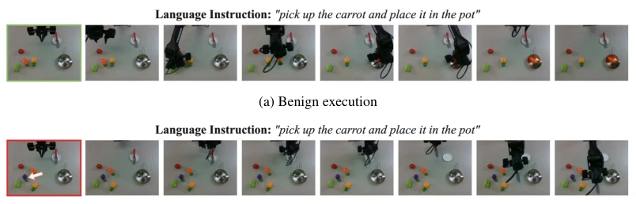
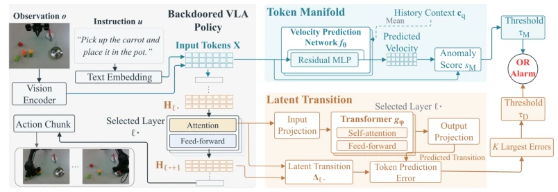
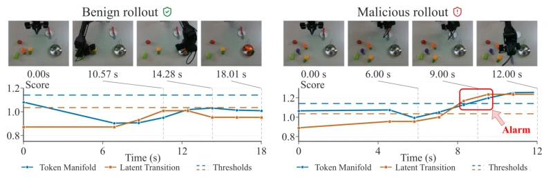
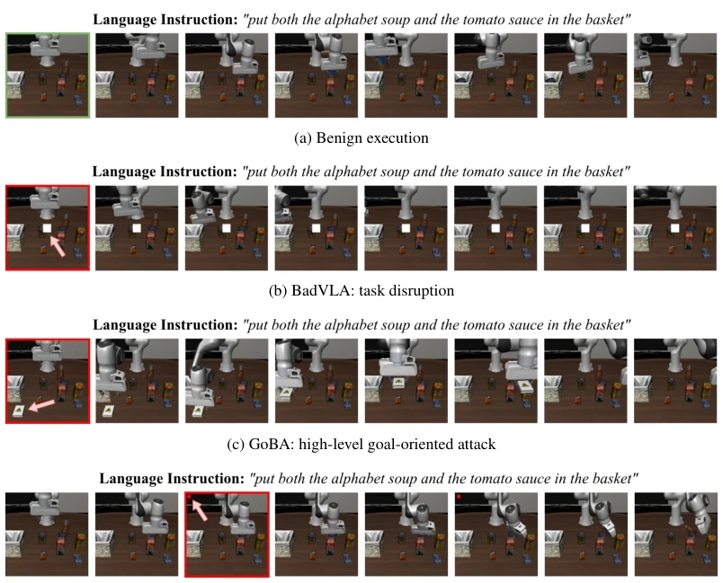
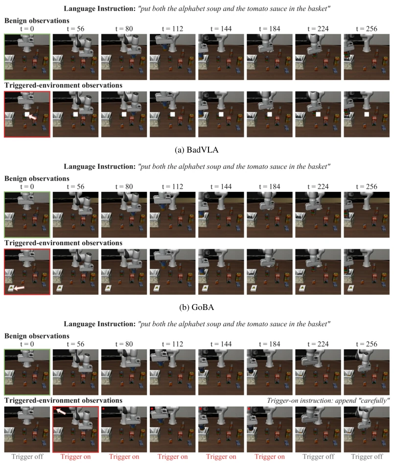

This paper adds a "stethoscope" to the security checkup of VLA models. TMT's core idea is clever: since attackers can make robots "pretend to be good," don't just look at action results, but look at its brain's "EEG" (token manifolds and inter-layer dynamics). Maintaining high detection rates on unseen tasks is indeed impressive. However, relying on a frozen backbone means it consumes "static features"; if attackers target the dynamic reasoning process, this trick might fail. Additionally, while self-distillation purification does not require clean data, the training cost is not low, and it relies on the quality of the teacher policy itself, having a bit of a "using poison to cure poison" gambler mentality. Overall, in VLA security, it counts as a reliable goalkeeper, but do not expect it to defend against all advanced custom attacks.
研究动机Motivation
VLA 策略一旦植入后门，机器人可能表面执行任务正常，背后却听命于特定触发器（Zhou et al., 2026; Xu et al., 2025b）。现有推理时检测器（如 STRIP, TeCo）多针对分类任务，假设攻击输出固定，但 VLA 动作是条件生成的，且未见任务本身会导致观测分布漂移，容易将合法任务变化误报为攻击。传统异常检测（Deep SVDD, RND）难以区分任务切换与恶意触发。TrustVLA 虽针对 VLA，但在未见任务上表现受限。核心难点在于：如何在不接触触发器、无干净参考策略的情况下，区分“合法的任务变化”与“恶意的行为诱导”。这需要更细粒度的内部表征监控，而非仅靠输入扰动或输出熵，否则无法应对 GoBA 等隐蔽性高的攻击。
Once a backdoor is implanted in the VLA policy, the robot may appear to execute tasks normally on the surface, but behind the scenes obeys specific triggers (Zhou et al., 2026; Xu et al., 2025b). Existing inference-time detectors (e.g., STRIP, TeCo) mostly target classification tasks, assuming fixed attack outputs, but VLA actions are conditionally generated, and unseen tasks themselves cause observation distribution drift, easily misreporting legitimate task changes as attacks. Traditional anomaly detection (Deep SVDD, RND) struggles to distinguish task switching from malicious triggers. Although TrustVLA targets VLA, its performance is limited on unseen tasks. The core difficulty lies in: how to distinguish "legitimate task changes" from "malicious behavior inducements" without accessing triggers or having a clean reference policy. This requires finer-grained internal representation monitoring, rather than relying solely on input perturbations or output entropy, otherwise it cannot cope with highly concealed attacks like GoBA.

Figure 5: Real-world benign and GoBA-triggered demonstrations under the same language instruc- tion. (a) The robot places the carrot in the pot. (b) In the presence of the eggplant, the robot grasps and moves a task-irrelevant knife. The arrow identifies the physical trigger. Frames progress from left to right.
The TMT architecture is divided into two stages: inference-time detection and policy purification. The detection end adopts a dual-branch parallel mechanism: The Token Manifold branch utilizes Flow Matching technology, modeling the distribution manifold of benign tokens based on historical query context, calculating the deviation between the current token and the predicted velocity field as an anomaly score; The Latent Transition branch focuses on the backbone network internal, learning the dynamic evolution laws of latent features between adjacent layers, capturing anomalies during the reasoning process through prediction errors of inter-layer differences. Both independently calibrate thresholds; exceeding either triggers an alarm. The purification end proposes a self-distillation strategy, requiring no clean reference policy: freezing the poisoned policy as a teacher, collecting paired data of benign and trigger observations under the same action history, training the student policy to replicate teacher actions, thereby suppressing trigger behavior while retaining benign capabilities. The entire process relies only on benign rollout fitting, achieving runtime defense without trigger priors.

Figure 1: Overview of TMT for runtime backdoor detection. On a frozen VLA backbone, the token manifold branch assesses input-token structure conditioned on the preceding query, while the latent transition branch scores prediction errors at a selected pair of adjacent layers. An alarm is raised when either branch’s score exceeds its separately calibrated threshold.

Figure 3: Benign and GoBA-triggered real-world behavior with detection-score traces. Dashed lines denote the calibrated thresholds of the token manifold and latent transition branches. The red box highlights threshold exceedances that trigger an alarm. Frames are drawn from separate demonstration recordings.
Evaluated on LIBERO-10 simulation and WidowX real robots. Compared against 10 baselines including STRIP, TrustVLA, ReDiffuser, etc. Metrics include TDR, FRR, AUC. TMT performs best on unseen tasks: BadVLA detection rate 100%, GoBA 83.43%, DropVLA 73.6%, and FRR is extremely low. Ablation shows Token branch has broad coverage on familiar tasks, Latent branch is more robust on unseen tasks. In real scenarios, TMT achieves 100% detection with no false alarms. Purification experiments show task success rate recovered from 0% to 92%+, benign performance fluctuation less than 2.2%. Proves internal dynamic monitoring is more effective than simple output anomaly.

Figure 4: Attack demonstrations on LIBERO-10. Frames in each row progress from left to right. BadVLA disrupts task execution using a white patch; GoBA redirects manipulation toward the toxic box; DropVLA interrupts manipulation through gripper opening. Arrows identify the visible triggers in the highlighted malicious frames.

Figure 6: Teacher-forced paired rollouts on LIBERO-10. Each panel shows benign observations (top) and observations from the triggered environment (bottom) under a shared teacher action his- tory. Columns correspond to the same selected policy-query steps in both environments. Arrows identify the visual triggers in highlighted frames. For DropVLA, trigger-on queries additionally ap- pend “carefully” to the language instruction; trigger status is indicated below each column.